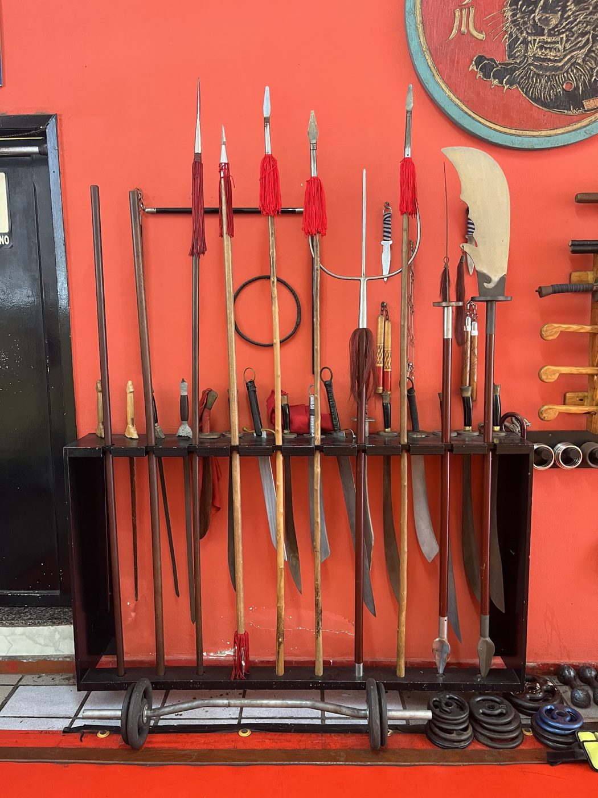
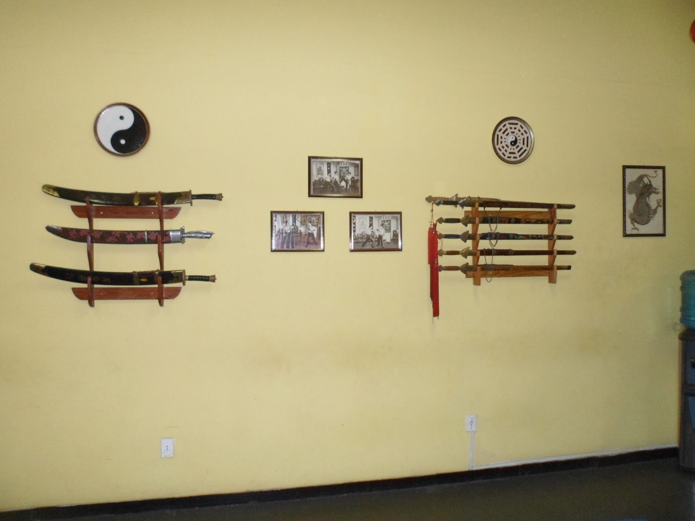
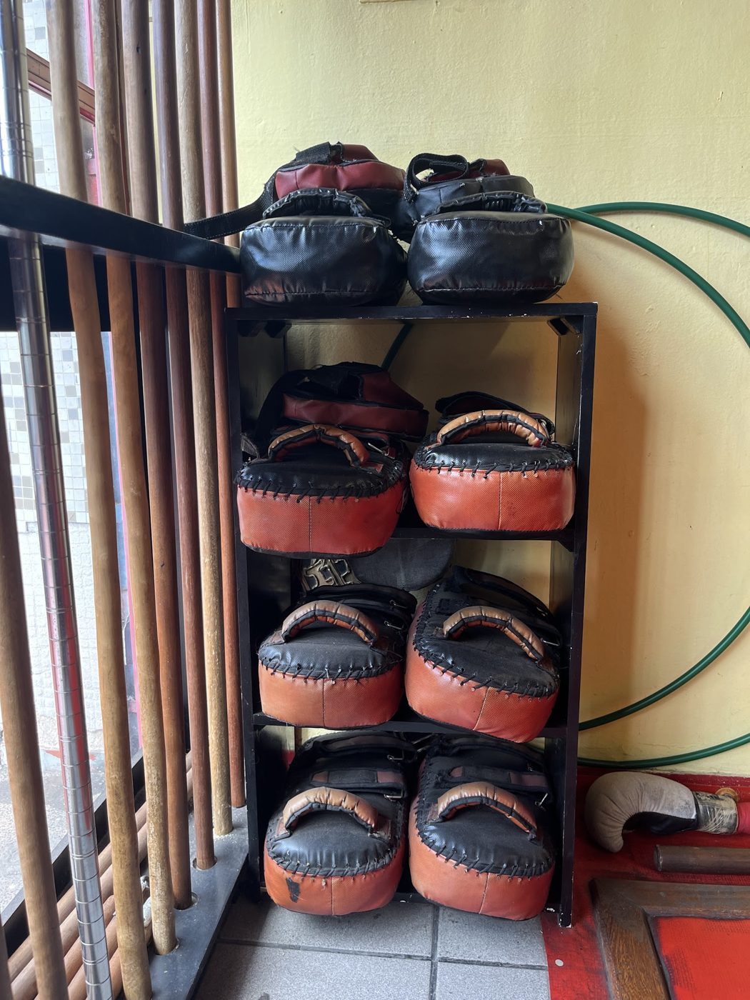
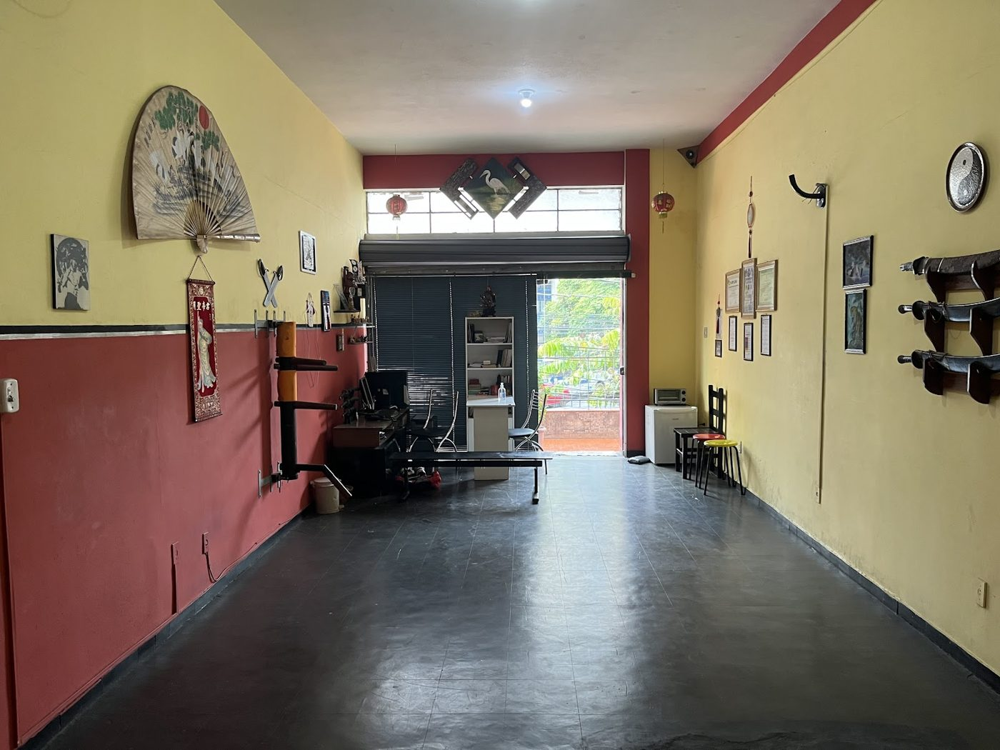

Minas
Wushu
Escola de kung fu no Barro Preto: kung fu tradicional, sanda, taijiquan e shuaijiao com o sifu Márcio Braga, de segunda a sexta, de manhã e à noite, e no sábado de manhã. Quem nunca treinou começa por uma aula experimental.
- Kung futradicional, linhagem Fei Hok Phai
- Sandaa luta do wushu
- Taijiquantai chi chuan
- Shuaijiaoluta agarrada chinesa
Uma das raras escolas de wushu raiz de Belo Horizonte, como escreve um aluno
A Minas Wushu fica na Rua dos Timbiras, 2764, sobreloja 105, no Barro Preto, em Belo Horizonte. Salão de paredes vermelhas e amarelas, boneco de madeira, estante de armas tradicionais e escudos de chute. A escola é da linhagem Fei Hok Phai e aparece na lista de academias da União Fei Hok Phai Kung Fu Wushu do Brasil.
No Google são 38 avaliações e a nota é 5,0. Os alunos falam do sifu Márcio, do ambiente tranquilo e respeitoso e de uma escola em que quem gosta de lutar luta e quem prefere só o condicionamento faz só o condicionamento.
Trajetória completa e graduação do sifu, e a história da escola em BH: texto que a escola envia.
- ModalidadesKung fu, Sanda, Taijiquan, Shuaijiao
- Desde2002, como diz o Instagram da escola
- ModalidadesKung fu, sanda, taijiquan e shuaijiao
- SifuMárcio Braga Ferreira
- LinhagemFei Hok Phai
- Instagram@minas.wushu, 1,5 mil seguidores
- HorárioSegunda a sexta, de manhã e à noite, e sábado de manhã
- Primeira aulaExperimental, marcada pelo WhatsApp

Do kung fu tradicional ao tai chi
Kung fu e sanda
Kung fu tradicional com formas, armas e aplicação, e sanda para quem quer lutar. Nas avaliações, um aluno escreve que o sifu Márcio tem no DNA o verdadeiro wushu kung fu raiz.
Aula experimental de kung fu
Taijiquan e shuaijiao
Tai chi chuan para quem busca saúde e concentração, e shuaijiao, a luta agarrada chinesa. Um aluno conta que a escola ajudou a desenvolver as estruturas motoras e a relação com o espaço.
Perguntar sobre as turmasDias, horários e idades de cada turma: a escola informa.
Funcionamento
Conforme o perfil da academia no Google. Os horários de cada turma entram quando a academia confirmar.
| Dia | Funcionamento |
|---|---|
| Segunda | 6h às 21h30 |
| Terça | 6h às 21h30 |
| Quarta | 7h às 21h30 |
| Quinta | 6h às 21h30 |
| Sexta | 7h às 20h |
| Sábado | 8h às 11h |
| Domingo | Fechado |
Sifu Márcio Braga
Fei Hok PhaiO sifu Márcio Braga Ferreira dá as aulas da Minas Wushu desde 2002 e é campeão brasileiro de taijiquan, como diz o Instagram da escola. Nas avaliações do Google, os alunos o descrevem como profissional exemplar, tranquilo, que mantém um ambiente pacífico e toma todas as precauções para evitar machucados.
Graduação, trajetória e foto do sifu: a escola envia.
Direto do @minas.wushu
Publicações reais da academia · 1.473 seguidores.
Ótimo ambiente, o professor é super tranquilo e mantém um ambiente pacífico e agradável, quem gosta de lutar luta, quem prefere só o aeróbico faz só o aeróbico, e ele toma todas as precauções pra evitar machucados entre os alunos.
Vinícius, no GoogleMinha experiência na escola Minas Wushu foi enriquecedora, ingressei na escola com bastante expectativas em desenvolver minhas estruturas motoras e a relação com o espaço.
Antonio, no GoogleMelhor academia de artes marciais de Belo Horizonte.
Avaliação no GoogleEspaço top, profissionais excelentes!
Avaliação no Google
Dentro da academia
Do perfil da academia no Google. Fotos novas entram no lugar destas.


Primeira aula
É pelo WhatsApp. O botão abre a conversa com a academia com a mensagem já escrita.
- Diga quem vai treinar, a idade e a modalidade.
- A academia responde com a turma e o dia.
- Venha no dia combinado.
Se a aula experimental é gratuita e o que vestir: a escola informa.
Como chegar
- Endereço
- Rua dos Timbiras, 2764, sobreloja 105, Barro Preto
Belo Horizonte, MG, 30140-060 - (31) 99185-7042
- @minas.wushu
- Horário
- Segunda a sexta, de manhã e à noite, e sábado de manhã
Venha conhecer o kung fu
Aula experimental pelo WhatsApp. Segunda a sexta, de manhã e à noite, e sábado de manhã.